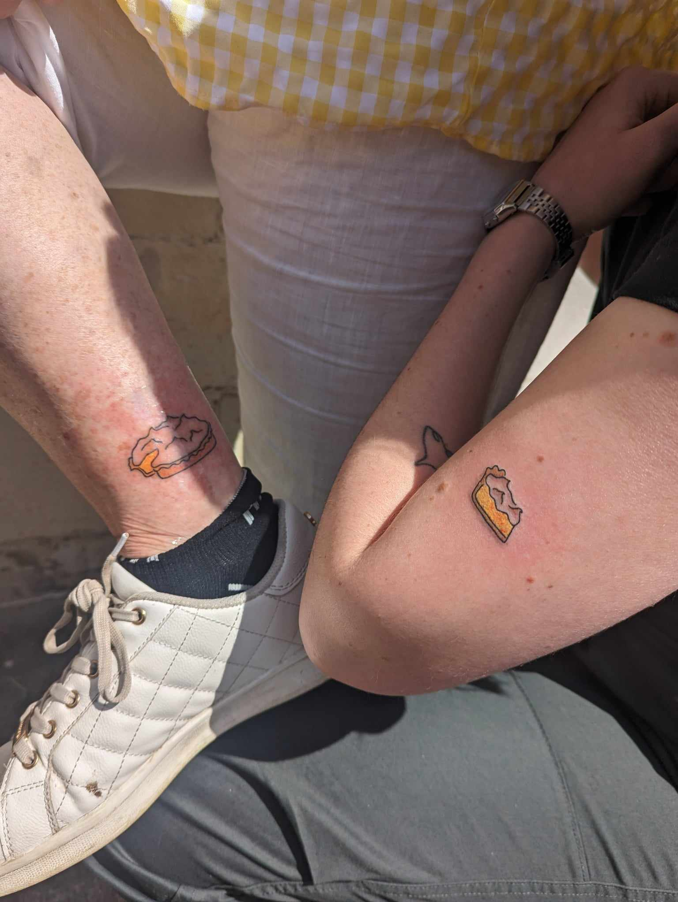

Grange's Lemon Meringue Pie

Description
Lemon meringue pie is a beloved tradition in the Zerba household. A firm but creamy lemon filling topped with a mountain of fresh meringue. It makes an appearance at every social event.
Ingredients
- 2 lemons, juiced
- 1 tin of condensed milk
- 1 Woolworths pie shell
- 4 eggs, large
- 1/2 cup sugar
Method
- Preheat oven to 160 degrees Celsius.
- Separate eggs then in a large bowl combine 2 egg yolks, lemon juice, and condensed milk.
- Beat mixture with electric hand mixer until thickened slightly. Pour into pie shell.
- Wash beaters before next step.
- Beat 4 egg whites until mixture starts to turn opaque, then start adding sugar slowly while mixing continuously.
- Once egg and sugar mixture has stiff peaks, use a large spoon to scoop on top of lemon mix. Take care not to overwork it.
- Put in oven for 10 minutes or until peaks of meringue start to brown.